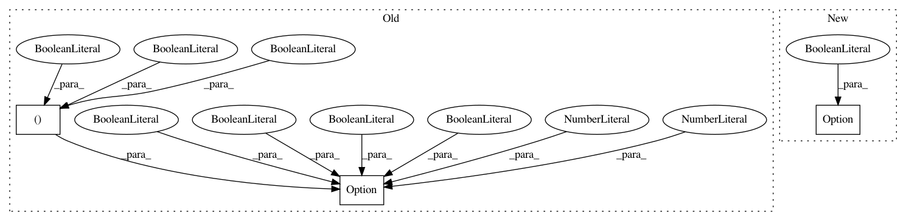

86b88deef2f79c9b93b3f17609dc47dbae5e1a00,tests/unit_test/test_option.py,TestOption,test_invalid_part_hybrid_ifmaps,#TestOption#,79
Before Change
with self.assertRaisesRegexp(ValueError,
"Option: .*partition_ifmaps.*"
"partition_hybrid.*"):
_ = Option(sw_gbuf_bypass=(False, False, False),
sw_solve_loopblocking=False,
partition_hybrid=False,
partition_batch=False,
partition_ifmaps=True,
ntops=10,
nprocesses=16,
verbose=False
)
def test_option_list(self):
""" Accessor option_list. """
options = Option(sw_gbuf_bypass=(False, False, False),
After Change
with self.assertRaisesRegexp(ValueError,
"Option: .*partition_ifmaps.*"
"partition_hybrid.*"):
_ = Option(partition_hybrid=False, partition_ifmaps=True)
def test_option_list(self):
""" Accessor option_list. """
options = Option()
In pattern: SUPERPATTERN
Frequency: 3
Non-data size: 3
Instances
Project Name: stanford-mast/nn_dataflow
Commit Name: 86b88deef2f79c9b93b3f17609dc47dbae5e1a00
Time: 2017-08-05
Author: mgao12@stanford.edu
File Name: tests/unit_test/test_option.py
Class Name: TestOption
Method Name: test_invalid_part_hybrid_ifmaps
Project Name: stanford-mast/nn_dataflow
Commit Name: 86b88deef2f79c9b93b3f17609dc47dbae5e1a00
Time: 2017-08-05
Author: mgao12@stanford.edu
File Name: tests/unit_test/test_option.py
Class Name: TestOption
Method Name: test_option_list
Project Name: stanford-mast/nn_dataflow
Commit Name: 86b88deef2f79c9b93b3f17609dc47dbae5e1a00
Time: 2017-08-05
Author: mgao12@stanford.edu
File Name: tests/dataflow_test/test_nn_dataflow.py
Class Name: TestNNDataflow
Method Name: setUp